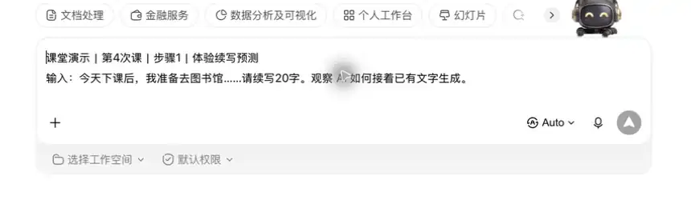
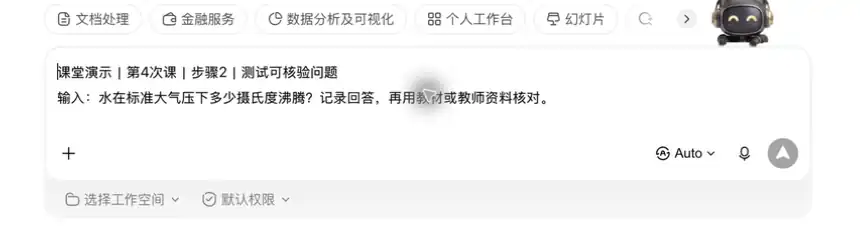
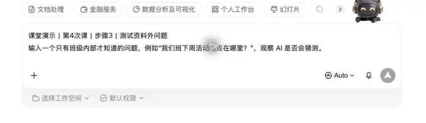
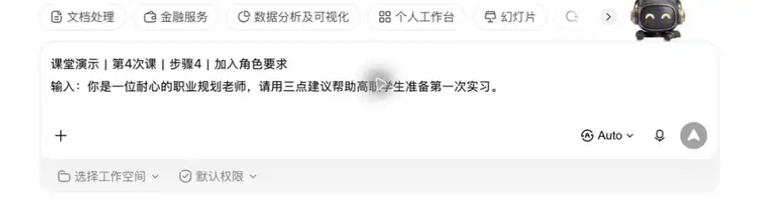

保存 1 条正确回答、1 条待核验回答和核验结论。
保存建议：第4次_预训练与后训练：大模型的“教育”_姓名
第一章｜AIGC 理论基础 · 第 4 次课 · 2 学时
理解模型从“会续写”到“会协助”的训练过程。
上一课知识回顾待补。
板块 ② 本节你将学会
保存 1 条正确回答、1 条待核验回答和核验结论。
保存建议：第4次_预训练与后训练：大模型的“教育”_姓名
每个概念先记住“它是什么”，再用一个例子判断“它能做什么、不能替你确认什么”。
概念： 模型先阅读大量文字、图片等材料，学习语言规律、常见表达和基础知识。这一步让模型具备“通用底子”，但不保证内容都准确、最新。
例子： 像学生先学语文、数学等基础课，能看懂“校园活动通知”的大致结构，但还不会自动写出符合本班实际情况的通知。概念： 训练时不用老师给每句话标注答案，而是从原材料中遮住一部分，让模型预测缺失内容或下一个词，逐渐学会表达规律。
例子： 句子“下周一举行班会，请各组______准备”，模型会根据上下文猜“提前”或“认真”。它学到的是续写规律，不等于已核实班会是否真的举行。概念： 当训练数据、模型参数和训练量增加时，模型可能在概括、翻译、写作或简单推理上表现得更好，一些原来不明显的能力会出现。这不代表它每次回答都正确。
例子： 小模型可能只能续写一句活动通知；能力更强的模型还能按“对象、时间、地点、要求”整理成初稿。但日期、地点和政策仍要由人核对。概念： 模型的训练材料有时间范围，超过这个范围的新政策、新活动、价格或新闻，模型可能不知道，也可能把旧信息当成新信息回答。
例子： 询问“本学期校历中期末考试日期”，模型给出的日期只能作线索；必须回到学校官网、教务通知或任课教师的正式信息确认。概念： SFT（监督微调）像岗前示范：用较高质量的问答或任务样例，教模型按要求回答。样例若有错误、偏见或格式混乱，输出也会受影响。
例子： 给模型多份规范的校园通知样例，它更容易生成“标题—时间—地点—要求”齐全的初稿；若样例中的联系方式是错的，生成结果也可能跟着出错。从“会续写”切入，再追问“会续写是否等于知道事实”：用近期信息与教材知识对照，引出预训练、SFT和人工核验的分工。
以完形填空说明自监督，以岗前培训说明SFT，展示“回答—查证—修订”的闭环。
核心案例｜预训练与后训练：大模型的“教育”
用一个“查娱乐新闻却查不到可靠答案”的小例子，理解模型为什么会说得像真的、却不一定是真的。小明用 AI 查“最近娱乐圈明星 ABC 的大瓜”，AI 给出一段看似详细的回答，却没有可靠来源。这样的内容能直接当事实吗？
先看模型为什么能写出流畅回答：它从大量材料中学习语言规律；再看它为什么不一定知道最新事实：训练资料可能有时间范围，也可能没有可靠来源。
模型能生成“像新闻的文字”，不等于它看到了新闻现场；近期信息、娱乐传闻和具体人物消息都要查可靠来源，不能把未查证回答写进作业结论。
能把回答分成“可参考”和“待核验”两类，并写清应去哪里核验，而不是只看它说得是否流畅。
图像 / 思维导图任务 围绕“预训练与后训练：大模型的“教育””完成一张四分支思维导图。
输入：今天下课后，我准备去图书馆……请续写20字。观察 AI 如何接着已有文字生成。

输入：水在标准大气压下多少摄氏度沸腾？记录回答，再用教材或教师资料核对。

输入一个只有班级内部才知道的问题，例如“我们班下周活动地点在哪里？”，观察 AI 是否会猜测。

输入：你是一位耐心的职业规划老师，请用三点建议帮助高职学生准备第一次实习。

在表格填写“问题—AI回答—核验来源—判断”，至少完成一条可靠回答和一条不能直接采用的回答。
设计5个测试问题，分析常用模型的知识边界
近期信息须查可靠来源，不能将未查证回答写入作业结论。
下一节《RLHF与强化学习：DeepSeek R1深度解析》会在今天的基础上继续练习新的方法和工具。